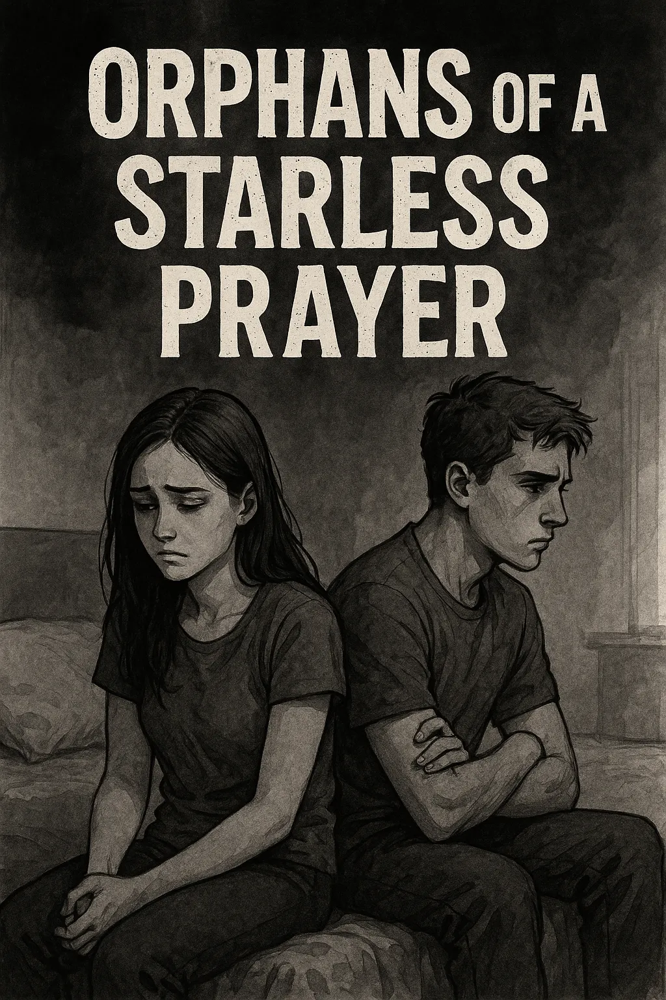
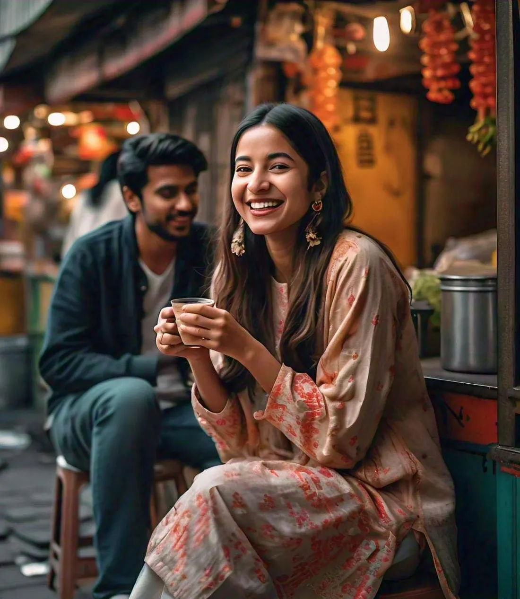

Together we Rise
A Tale of Love and Resilience - Exploring the power of unity and strength in overcoming life's challenges through love and mutual support.
A collection of my thoughts, stories, and insights shared on Medium. From personal reflections to social commentary, these articles showcase my diverse writing style and perspectives on life, love, and society.
Follow on MediumA Tale of Love and Resilience - Exploring the power of unity and strength in overcoming life's challenges through love and mutual support.
A Plea to Parents: Choose Love Over Chaos - A heartfelt appeal to parents about the importance of nurturing children with love rather than chaos.
Honestly, I don't even know what to write here. It has been ages since I started non-stop hustle and now finally caught a little break-or...

A poetic exploration of hope, faith, and the human condition. A deeply moving piece that touches on themes of spirituality and longing.

Just a Girl and Her Weird Dreams - An honest and humorous take on pursuing unconventional dreams and embracing one's unique path in life.